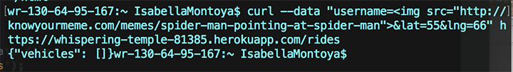
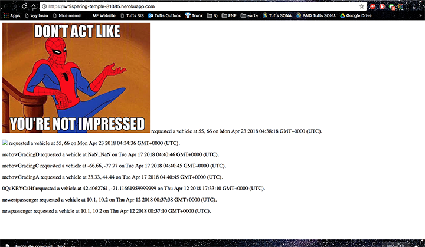

Introduction
My name is Isabella Montoya, or imonto01. I was hired to break in to Ashley Wicks' client-side and server-side code for the NotUber project to find and provide solutions for vulnerabilitites. Client Ming has requested I find at least 3 vulnerabilities.
Methodology
I started by reading through the links provided by Ming on the WebProgramming website. I then checked Ashley's code to see if it sanitized input or not. Since it didn't, I decided to curl a link to an image, something else, and something else.
Abstract of Findings
What the heck do i put in here aaaaAAAAAAAAaaaaaaaaaaAA
Issues Found
Issue 1: MongoDB Injection of an Image Link
-
Location:
/rides
-
Severity:
Medium severity. I was able to inject a link to a spiderman meme. Could wreak havoc if used maliciously.
-
Description:
For this vulnerability, I simply curled
"curl --data "username= &lat=55&lng=66" https://whispering-temple-81385.herokuapp.com/rides"
&lat=55&lng=66" https://whispering-temple-81385.herokuapp.com/rides"
and since the input is not sanitized, it is accepted exectly as I sent, and therefore the username is returned as a link to an image, which is shown when accessing https://whispering-temple-81385.herokuapp.com/
- Proof: Here is the code I curled to `/rides`. I used an image link instead of a username.

And here is the resulting output on index page:

- Resolution: Sanitize input. Use something like
input = input.replace(/[^\w\s]/gi, ''); to remove anything that could turn into code, such as > and < signs used for img tags.
Issue 2: Cross Site Scripting
- Location:
/rides
- Severity: Medium severity
- Description:
- Proof of vulnerability. Show pictures or it didn't happen.
- Resolution:
Issue 3
- Location:
- Severity:
- Description:
- Proof of vulnerability. Show pictures or it didn't happen.
- Resolution:
Conclusions
I DONE LEARNT THINGS
References